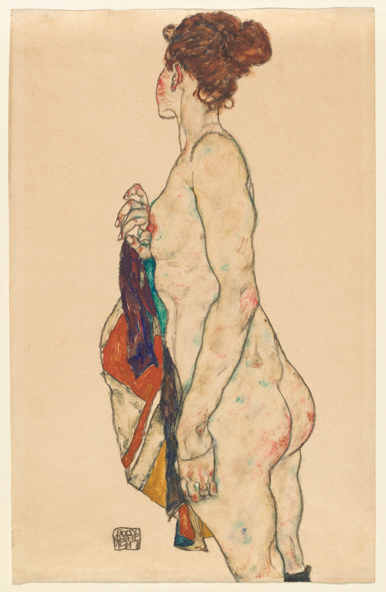
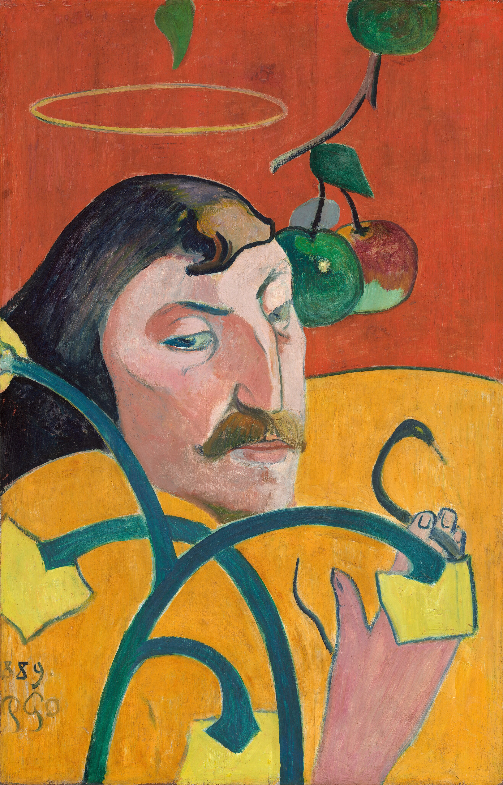

Η Τέχνη της ζωγραφικής
Καλώς ήρθατε! Η ζωγραφική είναι μια από τις αρχαιότερες και πιο εκφραστικές μορφές τέχνης.
Μέσα από αυτή την ιστοσελίδα, θα ταξιδέψουμε στην ιστορία, θα γνωρίσουμε τα σημαντικότερα
καλλιτεχνικά ρεύματα όπως τον Εξπρεσιονισμό και τον Ρομαντισμό, και θα ανακαλύψουμε τα υλικά
που έδωσαν ζωή στα σπουδαιότερα έργα της ανθρωπότητας.
Για περισσότερες πληροφορίες μπορείτε να
πατήσετε στην μπαρα πλοήγησης.

Πηγή: National Gallery of Art, Washington.
Άδεια: Public Domain

Πηγή: National Gallery of Art, Washington.
Άδεια: Public Domain